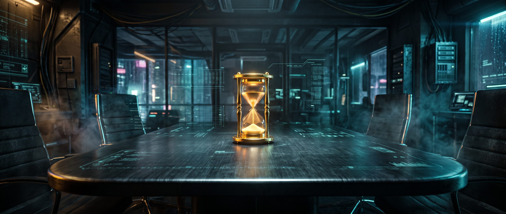

Symulator Strategii ŻyciowejKażdego ranka budzisz się przy tym samym stole negocjacyjnym. Walutą nie są tu pieniądze – walutą jest Twoja uwaga, biologia i nieodnawialne godziny. Codzienność podsuwa Ci okazje, kryzysy i złodziei energii. Zobaczmy, jak handlujesz swoim życiem.
Przed Tobą 20 kart dnia codziennego. Wybieraj tak, jak postępujesz w rzeczywistości – nie tak, jak mówią podręczniki produktywności.